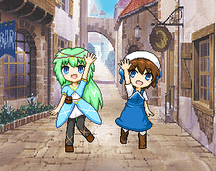
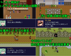
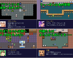

Log in with itch.io to leave a comment.
リューさんとツムジちゃんの優しさ、ヒメディちゃんの苦悩に心を打たれました！みんなが幸せになりますように！
今回は 緑化委員会と ヒメディちゃんが主役のお話
バカとバカが対消滅する 因果応報オチをお楽しみください
想定視聴時間30～35分ぐらい 途中セーブは7回です
製作ツール2003S 配信OK 動画投稿は自分でやります


Comments
リューさんとツムジちゃんの優しさ、ヒメディちゃんの苦悩に心を打たれました！みんなが幸せになりますように！
今回は 緑化委員会と ヒメディちゃんが主役のお話
バカとバカが対消滅する 因果応報オチをお楽しみください
想定視聴時間30～35分ぐらい 途中セーブは7回です
製作ツール2003S 配信OK 動画投稿は自分でやります